Some Musical Maths
The Twelve-Tone Scale
The twelve-tone system was derived as a compromise between the natural harmonics generated on physical instruments, and the desire to be able to play in different keys without complicated tuning. The following chart demonstrates the different harmonics and the intervals that they generate when applied repeatedly but reduced to the same octave, and compares them to the even-tempered scale. The labels on the dots indicate the number of times the interval has been repeated from the base interval (and the fading is greater for a greater number of repetitions)
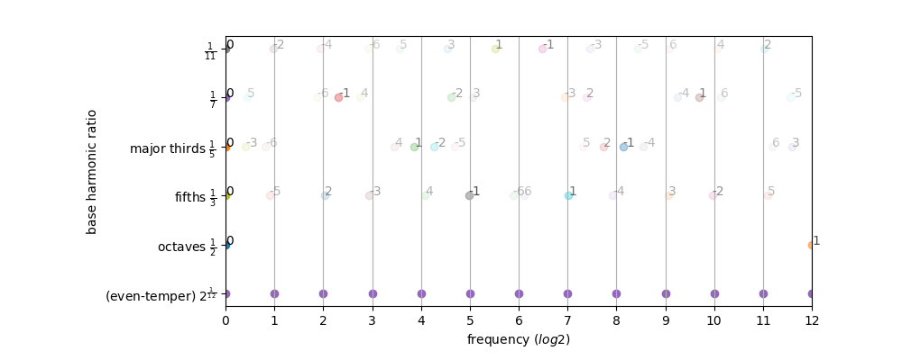
This illustrates how the frequencies generated by repeating a perfect fifth match very closely to the even-tempered scale, and how it produces a good approximation for major thirds as well.
The circle of fifths
A circle of fifths may be produced where the twelve tones are arranged into a cycle where adjacent tones are separated by a perfect fifth (7 semi-tones). (This is the only fixed-interval cycle that covers the whole twelve-tone scale, since (1, 11) and (5, 7) are the only pairs of numbers below 12 that are relatively prime to 12).
The twelve tones can be displayed visually in a circle either in standard order, or in the circle of fifths:
| Semitone Order | Fifths Order |
|---|
| 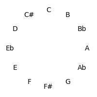 | 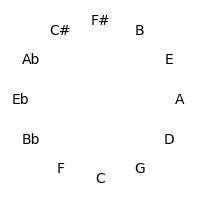 |
Harmonic Space
Let's first try to establish the mathematical relationship between notes more carefully. Since we are looking to quantify differences between different notes, this can be represented by picturing the notes as arranged in a space, where the distance between the notes corresponds to how discordant those two notes sound when played together.
We'll then require a function hd that is a metric on the frequency space, which approximates the harmonic difference between two frequencies. The result should be low for frequencies that are close harmonies of each other, and high for frequencies that aren't. The following principles will apply:
| Principle | Mathematical Formulation |
|---|
| Notes are perfectly harmonious with themselves | hd(a, a) = 0 |
| Notes exactly an octave a part are equivalent | hd(a, 2a) = 0 |
| Harmonic difference is independent of direction (commutative) | hd(a, b) = hd(b, a) |
| Harmonic difference is constant for any interval - therefore independent under transposition | hd(a, b) = hd(ra, rb) |
The circle of fifths is advantageous because a perfect fifth is the closest harmony other than an octave, being derived from dividing a pitch by 3 (the lowest natural number other than 2 - which produces octaves)
Basing the difference directly on the distance between two points on the circle of fifths is simple; the first table contains tones in the order of the circle of fifths, the second on their standard pitch-based order:
| Tone | A | E | B | F# | C# | Ab | Eb | Bb | F | C | G | D |
|---|
| Index | 0 | 7 | 2 | 9 | 4 | 11 | 6 | 1 | 8 | 3 | 10 | 5 |
|---|
| Position | 0 | 1 | 2 | 3 | 4 | 5 | 6 | 7 | 8 | 9 | 10 | 11 |
|---|
| Tone | A | Bb | B | C | C# | D | Eb | E | F | F# | G | Ab |
|---|
| Index | 0 | 1 | 2 | 3 | 4 | 5 | 6 | 7 | 8 | 9 | 10 | 11 |
|---|
| Position | 0 | 7 | 2 | 9 | 4 | 11 | 6 | 1 | 8 | 3 | 10 | 5 |
|---|
The equation hd(a, b) = p(a) - p(b) (mod 12) (where p is the position in the circle of fifths) represents this distance, which then trivially satisfies some of the above conditions for harmonic difference. However, we have not yet investigated the relative dischordancy of intervals, or explored the structure of this harmonic space.
Geometry of intervals in the twelve-tone-space
Because 12 is not a prime, intervals of 2, 3, 4 and 6 semitones form cycles: The intervals generated by repeated major thirds (4 semitones) comprise an "equilateral triangle" - each side must be the same length. Likewise the intervals generated by repeated minor thirds (3 semitones) comprise a "square" - each side must be the same length. Major seconds (2 semitones) generate two hexagons, and augmented fourths (6 semitones) generate 6 pairs of numbers.
The following table demonstrates these cycles on both the circle of fifths and the circle of semitones
| Interval | Cycle | Circle of fifths | Circle of Semitones |
|---|
| 1 / 11 |
|
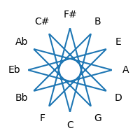
|
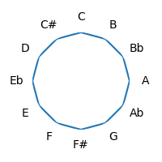
|
| 2 / 10 |
|
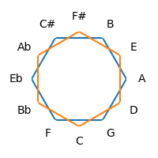
|
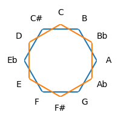
|
| 3 / 9 |
|
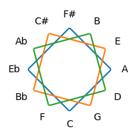
|
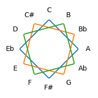
|
| 4 / 8 |
|

|
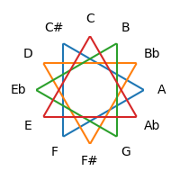
|
| 5 / 7 |
|
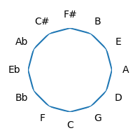
|
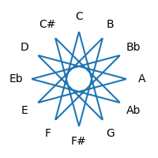
|
| 6 |
|
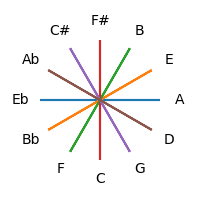
|
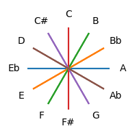
|
Relative Dischordancy
We've already defined octaves as of no distance. The next purest interval is a perfect fifth (dividing frequency by 3), followed by a major third (dividing it by 5). Generally in western music the order of dischordancy is clear (starting with least dischordant):
| Interval | Semitones | Inverse Interval | Semitones |
|---|
| Unison | 0 | Octave | 12 |
| Perfect Fifth | 7 | Perfect Fourth | 5 |
| Major Third | 4 | Minor Sixth | 8 |
| Minor Third | 3 | Major Sixth | 9 |
| Whole Tone | 2 | Minor Seventh | 10 |
| Semitone | 1 | Major Seventh | 11 |
| Augmented Fourth | 6 | Diminished Fifth | 6 |
This assumes that the dischordancy of an interval is exactly the same as its inverse (which we've assumed above, and which makes a metric space easier, although it may not be exactly true in practice).
We can express this as:
0 = d(0) < d(5) < d(4) < d(3) < d(2) < d(1) < d(6)
However, simply using the circle of fifths generates the following order instead:
0 = d(0) < d(5) < d(2) < d(3) < d(4) < d(1) < d(6)
This is so using any measure that simply orders based on the circle of fifths, since whole tones end up before major thirds in that order. The two most obvious ones are radial distance around the circle and distance of a straight line across the circle in two dimensions.
A Tuneful Torus
In order to modify the order whilst still retaining the same basic structure, let's consider an extension of the circle to a torus (or doughnut shape in 3 dimensions). The aim is to increase the distance for the whole tone (the second repeat of the perfect fifth), whilst reducing it for the major third and minor third (the third and fourth repeats). It's important that the whole structure needs to preserve the symmetries we discovered above.
Define the distance between two points on the surface of the torus as the sum of the (scaled) differences of their toroidal angle (from the center - γ) and their poloidal angle (around the small circle of the ring - θ). Then we want to maximize θ for d(2) whilst minimizing it for d(4) and d(3). This can be accomplished by arranging the points in a spiral around the "ring" of the doughnut so that a whole tone results in moving to the opposite side, but another whole tone comes back to the same θ-position - which implies that each semitone will move 90° around the ring.
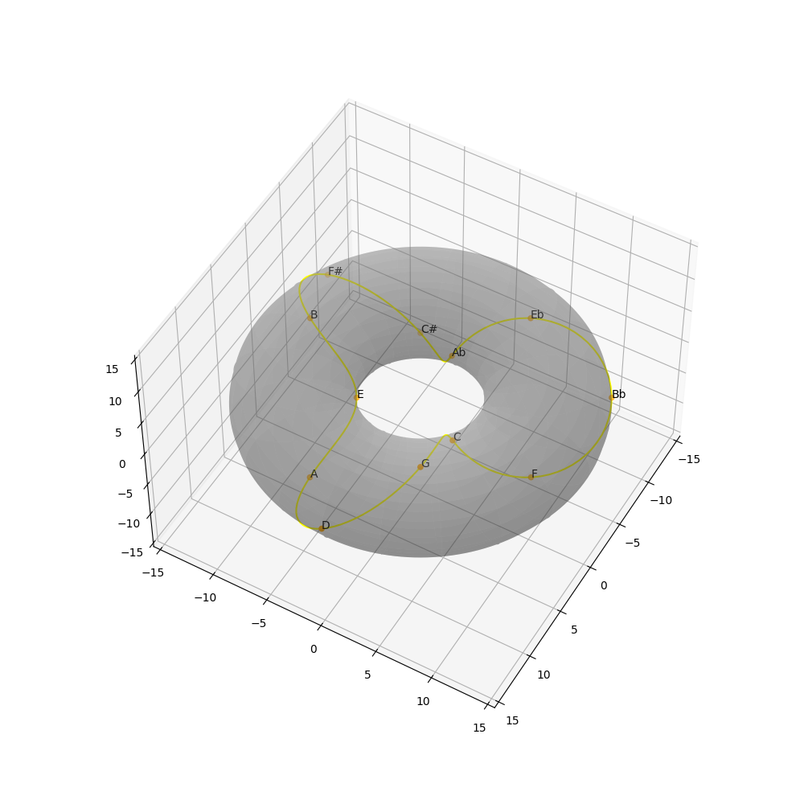
| Interval | Toroidal Angle (γ) | Poloidal Angle (θ) | Distance (2γ + θ) |
|---|
| 0 |
0*π/6 |
0*π/2 |
0*π/6 |
| 7 |
1*π/6 |
1*π/2 |
5*π/6 |
| 4 |
4*π/6 |
0*π/2 |
8*π/6 |
| 3 |
3*π/6 |
1*π/2 |
9*π/6 |
| 2 |
2*π/6 |
2*π/2 |
10*π/6 |
| 1 |
5*π/6 |
1*π/2 |
13*π/6 |
| 6 |
6*π/6 |
2*π/2 |
18*π/6 |
Please note that the two-dimensional projections included here are not ideal - by running the interactive examples you can rotate the torus to get a clearer idea of each figure.
The geometrical patterns we saw earlier for tone cycles can also be visualized on this torus projection. Scales and chords also show interesting patterns on the circle of fifths in either space.
© David Fraser 2013